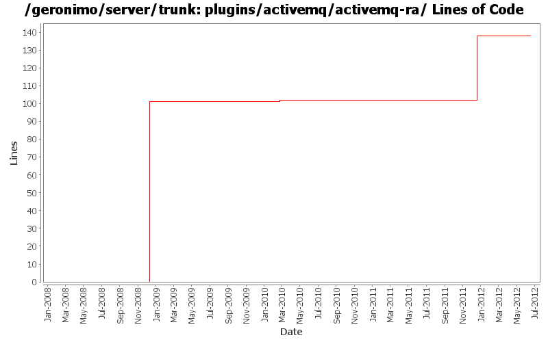

[root]/plugins/activemq/activemq-ra
 src
(0 files, 0 lines)
src
(0 files, 0 lines)
 main
(0 files, 0 lines)
main
(0 files, 0 lines)
 history
(1 files, 14 lines)
history
(1 files, 14 lines)
 plan
(1 files, 71 lines)
plan
(1 files, 71 lines)

| Author | Changes | Lines of Code | Lines per Change |
|---|---|---|---|
| Totals | 23 (100.0%) | 171 (100.0%) | 7.4 |
| dwoods | 7 (30.4%) | 115 (67.3%) | 16.4 |
| djencks | 5 (21.7%) | 44 (25.7%) | 8.8 |
| jdillon | 3 (13.0%) | 5 (2.9%) | 1.6 |
| rickmcguire | 2 (8.7%) | 2 (1.2%) | 1.0 |
| gawor | 1 (4.3%) | 2 (1.2%) | 2.0 |
| xiaming | 1 (4.3%) | 1 (0.6%) | 1.0 |
| kevan | 3 (13.0%) | 1 (0.6%) | 0.3 |
| hanhongfang | 1 (4.3%) | 1 (0.6%) | 1.0 |
Update trunk version to 4.0.0-SNAPSHOT
1 lines of code changed in 1 file:
GERONIMO-6240 Modify configs so that they use features as the bootstrap, and fix a few compile and test errors. Servers build but do not fully start
36 lines of code changed in 1 file:
GERONIMO-6240 Make several base geronimo functions (kernel, deployer, etc) DS services and make the car-maven-plugin take advantage of that. Server assembly doesn't work yet, builds framework.
1 lines of code changed in 1 file:
GERONIMO-6110 On 3.0 we don't register the 61616 port and the IP address for the server socket is not correct.
1 lines of code changed in 1 file:
[maven-release-plugin] prepare release 3.0-M2
1 lines of code changed in 1 file:
[maven-release-plugin] prepare branch 3.0-M2
1 lines of code changed in 1 file:
GERONIMO-5336: ServerHostName should default to 0.0.0.0
2 lines of code changed in 1 file:
GERONIMO-5290 fix many of the deprecation warnings from maven 3
4 lines of code changed in 1 file:
GERONIMO-4931 Run activemq under (aries) blueprint using xbean-blueprint
2 lines of code changed in 1 file:
more required updates due to renaming of the connector and transaction artifacts to include -1_6 in r805984
1 lines of code changed in 1 file:
GERONIMO-4655 upgrade version to 3.0-SNAPSHOT, make a few things more consistent
1 lines of code changed in 1 file:
GERONIMO-4337 rename AMQ5 modules to old names that apps expect
7 lines of code changed in 1 file:
GERONIMO-4337 rename AMQ5 modules to old names that apps expect
104 lines of code changed in 1 file:
GERONIMO-4337 rename AMQ5 modules to old names that apps expect
0 lines of code changed in 1 file:
GERONIMO-4337 remove old AMQ4 based modules
3 lines of code changed in 3 files:
Update LICENSE and NOTICE files. Merge from 2.1 branch
0 lines of code changed in 2 files:
upgrade trunk to 2.2-SNAPSHOT
1 lines of code changed in 1 file:
(GERONIMO-3747) Fixed parentage of module groups, though most still need to have their modules put into the proper groupId
Updated groupId of *everything* under framework/** to org.apache.geronimo.framework, and did my best to update all references
5 lines of code changed in 1 file:
(GERONIMO-3771) Moved maven-plugins/* to buildsupport/*, updated groupId to org.apache.geronimo.buildsupport
0 lines of code changed in 2 files: